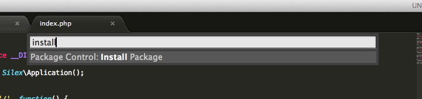
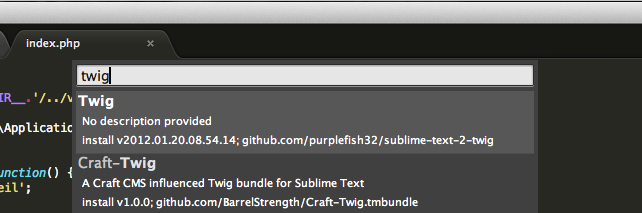

Liste de moteurs de templating
Puisque Silex est conçu pour fonctionner facilement avec Twig, nous allons utiliser ce dernier : http://twig.sensiolabs.org/
La première chose à faire est de configurer son éditeur de code pour qu'il supporte la syntaxe de Twig
Sur Sublime Text


// Services
$app->register(new Silex\Provider\TwigServiceProvider(), array(
'twig.path' => __DIR__.'/../views',
));
Nous venons de rajouter Twig à Silex et nous avons créé un dossier qui va contenir nos vues (notre HTMLs, nos templates)
Il faut maintenant créer ces vues et indiquer aux routes de les utiliser
Value: {{ value }}
$app->get('/', function()
{
global $app;
$data = array(
'value' => 'Toto'
);
return $app['twig']->render('example.twig', $data);
});
Dans index.php
Dans example.twig
Alternative à global $app
$app->get('/', function() use (Silex\Application $app)
{
/* ... */
});
Il s'agit d'une injection de dépendance. Silex va automatiquement envoyer l'application en paramètre.
Quelques exemples d'utilisation de Twig
(Pour aller plus loin, utilisez la documentation Twig)
Faire un echo d'une variable et d'un tableau indexé
index.php
$data = array(
'value' => 'Toto',
'lorem' => array(
'foo' => 'bar'
)
);
return $app['twig']->render('example.twig', $data);
example.twig
{{ value }}
<br>{{ lorem.foo }}
Il est possible d'appliquer des filtres
index.php
$data = array(
'value' => ' Toto'
);
return $app['twig']->render('example.twig', $data);
example.twig
{{ value|trim }}
{{ value|upper }}
{{ value|replace('O', 'A')|reverse }}
{{ value|reverse }}
{{ value|trim|upper|replace('O', 'A')|reverse }}
Il est possible d'utiliser des conditions (if)
index.php
$data = array(
'value' => false
);
return $app['twig']->render('example.twig', $data);
example.twig
{% if value %}
Vrai !
{% else %}
Faux !
{% endif %}
Pour un if et tout ce qui n'implique pas de faire un echo, nous n'utilisons pas la double accolade mais {% if ... %}
Il est possible de boucler sur un tableau (foreach)
index.php
$data = array(
'values' => array(
'key1' => 'a',
'key2' => 'b',
'key3' => 'c',
'key4' => 'd',
'key5' => 'e',
)
);
return $app['twig']->render('example.twig',$data);
example.twig
{% for item in values %}
{{ item }}
{% endfor %}
En gardant les clés
example.twig
{% for key, item in values %}
{{ key }} = {{ item }}
{% endfor %}
Tout comme il est possible de faire un for classique
example.twig
{% for i in range(0, 3) %}
{{ i }}
{% endfor %}
{% for i in range(low = 2, high = 10, step = 2) %}
{{ i }}
{% endfor %}
Il est possible de définir une variable
example.twig
{% set foo = 'bar' %}
{{ foo }}
Si vous souhaitez faire un lien vers un fichier, il est nécessaire de l'écrire en absolu
Vous pouvez récupérer l'URL du site de cette manière
<link rel="stylesheet" href="{{ app.request.basepath }}/src/css/style.css">
Il est possible d'inclure d'autres templates Twig
example.twig
{{ include('partials/header.twig', {title:'example'}) }}
{{ include('partials/footer.twig') }}
partials/header.twig
<!doctype html>
<html lang="en">
<head>
<meta charset="UTF-8">
<title>{{title}}</title>
<link rel="stylesheet" href="src/css/style.css">
</head>
<body>
partials/footer.twig
</body>
</html>
Enfin, Twig propose des systèmes d'extends et de blocks qui font la force du moteur
Idéal pour définir un layout
Nous allons avoir besoin de créer des liens entre les différentes pages
Silex gère déjà la création d'URL, mais il faut faire le lien avec Twig pour pouvoir utiliser les fonctions directement dans le template
Appliquez la méthode bind() sur chacune des routes pour leur donner des identifiants
/* ... */
->bind('home');
/* ... */
->bind('page');
/* ... */
->bind('category');
La fonction url() a été rajouté à Twig et permet de générer le lien absolue vers la route
<a href="{{ url('home') }}">Home</a>
<a href="{{ url('category', {category:'test'}) }}">Category test</a>
Si la route change, l'URL sera automatiquement mise à jour
Nous allons développer un pokedex
Nous n'allons avoir que quelques pages et nous allons utiliser un framework front